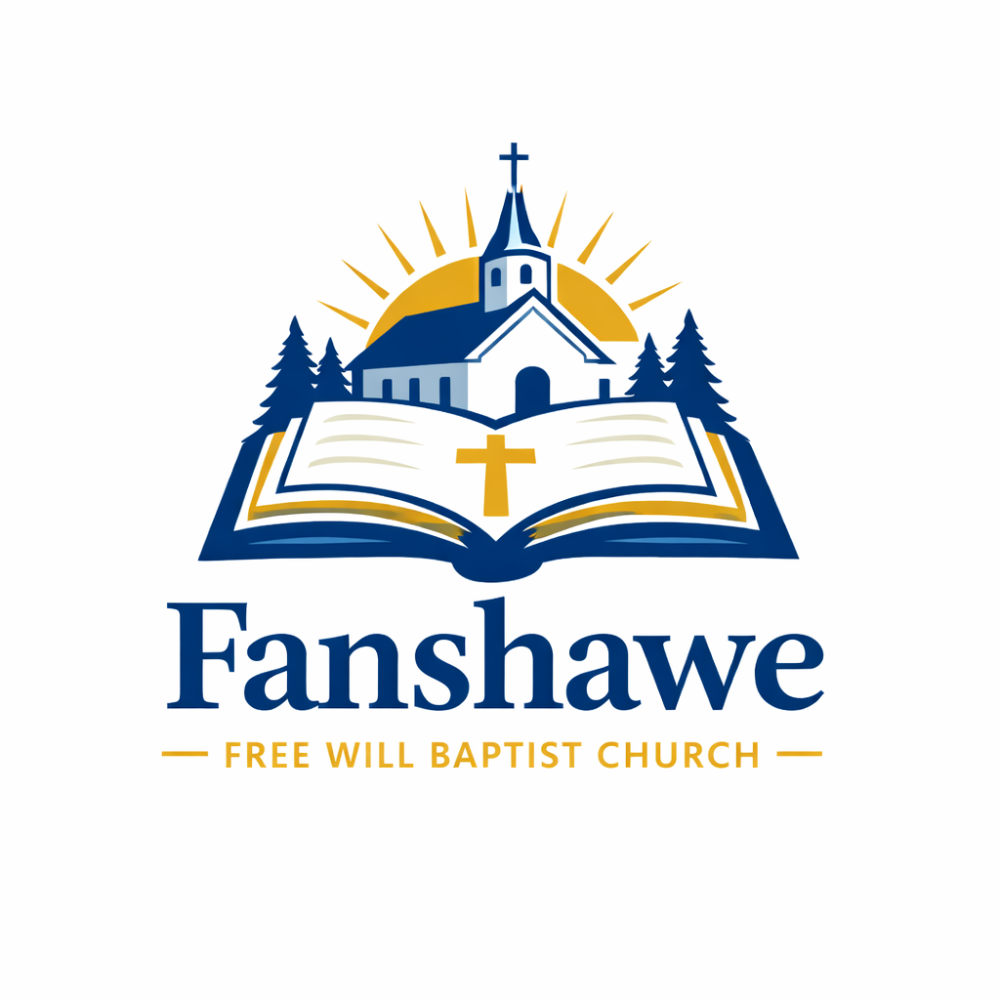

Join us for worship every Sunday at 10:00 AM and 5:00 PM,
and Wednesday at 6:00 PM.
36890 US-270, Fanshawe, OK 74935
Fanshawe Free Will Baptist Church has been a cornerstone of our community since 1908.
We are a welcoming Christian congregation that loves God, our neighbors, and our community. Our church family is a vibrant mix of ages, with active ministries for children, students, and adults.
We serve breakfast on Sunday mornings and supper on Wednesday nights, creating opportunities for fellowship and encouragement. As part of our outreach to the community, we also deliver Sunday breakfast to homebound individuals who are unable to leave their homes, regardless of church affiliation. Throughout the year, we host Vacation Bible School, youth activities, outreach events, and community service projects that help us share the love of Christ with those around us.
We are grateful to partner with other local churches in ministry, including the Fanshawe Community of Christ in supporting Released Time programs that serve students in the Fanshawe school district. We also partner with United Free Will Baptist Church in Red Oak to host church camp and provide opportunities for young people to grow in their faith and build lasting friendships.
Fanshawe Free Will Baptist Church is a member of the Kiamichi Free Will Baptist Association, which is affiliated with the Oklahoma Free Will Baptist Association and the National Association of Free Will Baptists.
For more than a century, we have sought to share the Gospel of Jesus Christ through worship, discipleship, fellowship, and service. We invite you to join us as we grow together in faith and serve our community.
Sundays: 10:00 AM and 5:00 PM worship services
Sunday Morning: Breakfast before services
Wednesdays: 6:00 PM Bible Study & Evening Supper
Email: pastor@fanshawefwb.org
Address: 36890 US-270, Fanshawe, OK 74935
Follow us on Facebook: Fanshawe FWB Church